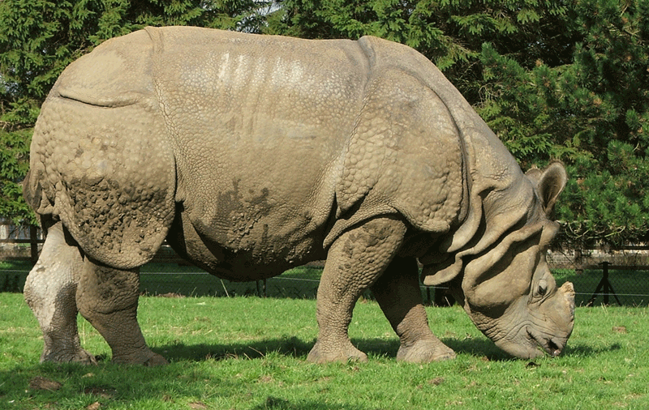
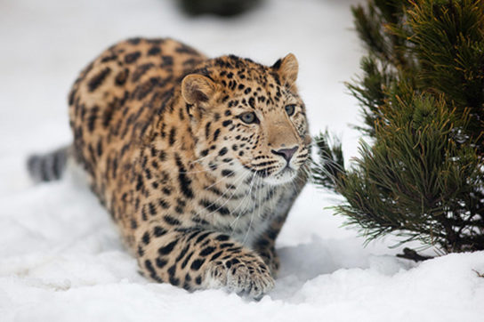
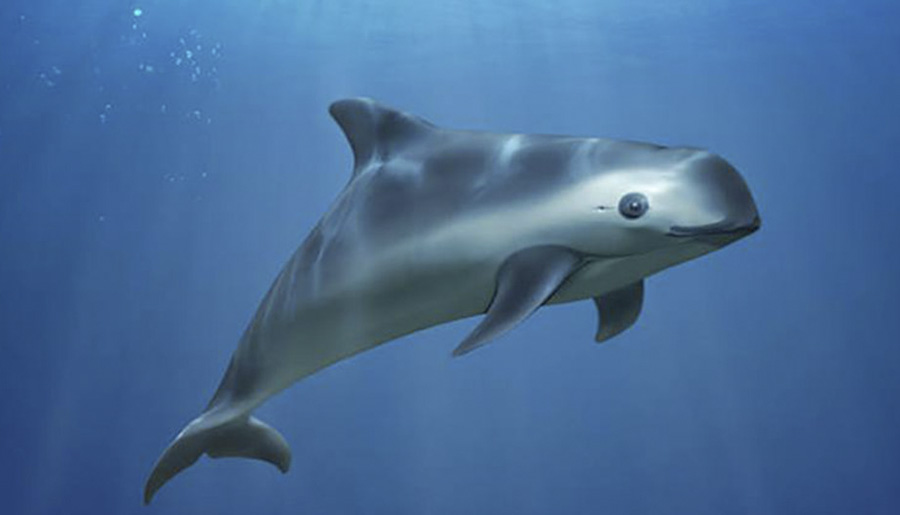

Под критической угрозой вымирания находятся 2427 видов животных, в том числе панды, орангутаны, гориллы, полярные медведи, слоны и киты. Во Всемирный день защиты животных, который отмечается 4 октября, мы рассказываем о пяти самых редких животных нашей планеты.
Численность окололо 60 особей

На сегодняшний день яванский носорог — самое редкое крупное млекопитающее на Земле. Небольшая популяция (около 60 особей) живет в дикой природе только в национальном парке Уджунг-Кулон в Индонезии. Раньше яванский носорог заселял обширную часть Азии: животное обитало в Северо-Восточной Индии, а также в Мьянме, Таиланде, Камбодже, Лаосе, Вьетнаме и на индонезийских островах Суматра и Ява.Яванский носорог достигает 4 метров в длину и 1,7 метра в высоту, его вес превышает 2 тонны, на темно-серой коже присутствуют складки, которые создают видимость брони. Этот вид очень похож на однорогого индийского носорога, численность которого также довольно мала (всего около 600 особей).
Численность окололо 80 особей

На грани исчезновения находятся многие крупные кошки, но амурский леопард — самая редкая из них. За последние пять лет удалось увеличить численность популяции этих животных с 30 до 80 особей. Бόльшая часть леопардов обитает в российском Приморском крае, хотя раньше амурские барсы заселяли весь Корейский полуостров и несколько провинций Китая.Изучение дальневосточного леопарда проводится только бесконтактными методами в заповедниках. Цвет шерсти леопарда зависит от времени года, летом окрас меха приобретает более яркий и насыщенный оттенок, но характерные пятна остаются неизменными. Леопард также отличается острым зрением, которое позволяет увидеть жертву на расстоянии до 1,5 километра.
Численность окололо 30 особей

Вакита, или калифорнийская морская свинья, — самое редкое морское млекопитающее на планете. Животное было обнаружено в 1958 году и очень быстро оказалось на грани вымирания из-за незаконного рыболовного промысла в Калифорнийском заливе. Браконьеры охотились не на свиней, но животные попадались в ловушки, предназначенные для ловли рыбы, поэтому с 2015 года жаберные сети были строго запрещены.Вакита редко попадала в поле зрения ученых. Чаще всего эти животные встречаются вблизи берега на мелководье, но быстро скрываются, если замечают приближение лодки. Вакита — самый маленький представитель морских свиней, редко достигает больше 150 сантиметров в длину, вес животного составляет около пятидесяти килограммов. Вокруг глаз у вакиты есть темные кольца, а от рта до грудных плавников тянется темная полоска.